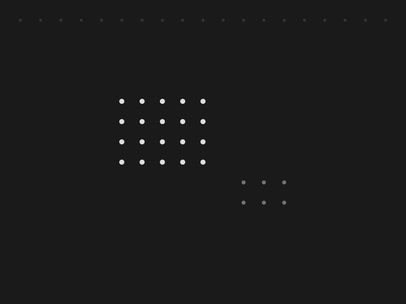

Creating Experian's First Design System
No formal design system existed — multiple domain teams independently created UI patterns with only a style guide for loose guidance, leading to inconsistency, ongoing debate, and slow decision-making. Led the creation of the first reusable component libraries across iOS, Android, and Web. Established the foundational token architecture, typography scale, and a design QA process for reviewing projects against system standards. Built Slack support channels and intake workflows to operationalize the system. Pushed back on skeptical engineering by demonstrating the value of centralized decisions, reusable code, and faster shipping with baked-in accessibility. The effort formalized into Experian's first official design systems team, and design leadership mandated all new projects use the system.
